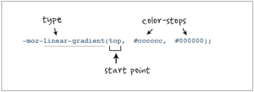
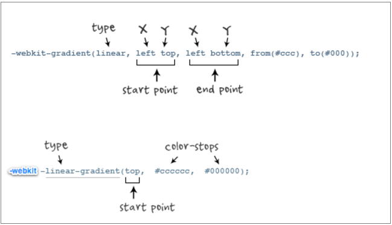
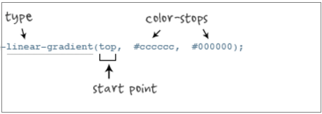

有时我们会看到网站上的一些图片是渐变色的，这些图片有的是ui设计出来的，有的则是直接通过css3制作出来的。下面就讲一下css3实现渐变色的方法，以及在各个浏览器上的兼容性。CSS3 Gradient分为linear-gradient(线性渐变)和radial-gradient(径向渐变)。
而我们今天主要是针对线性渐变来剖析其具体的用法。
为了更好的应用CSS3 Gradient,我们需要先了解一下目前的几种现代浏览器的内核，主流内核主要有Mozilla（Gecko）（熟悉的有Firefox，Flock等浏览器）、WebKit（熟悉的有Safari、Chrome等浏览器）、Opera(presto)（Opera浏览器）、Trident（讨厌的IE浏览器）。在ie下也可以实现渐变，不过要加滤镜。
下面是代码：1
2
3
4
5
6
7
8
9
10
11
12
13
14
15
16
17
18.l-gradient{
/*火狐*/
background:-moz-linear-gradient(top, #AC07BD, #f6f6f8);
/* Safari 4-5, Chrome 1-9*/
background: -webkit-gradient(linear, 0% 0%, 0% 100%, from(#AC07BD), to(#f140f8));
/*Safari5.1 Chrome 10+*/
background: -webkit-linear-gradient(top, #AC07BD, #f140f8);
/*Opera 11.10+*/
background: -o-linear-gradient(top, #AC07BD, #f140f8);
/*IE6 7*/
+background: #bada55;
/*IE 8 9*/
-ms-FILTER: progid:DXImageTransform.Microsoft.Gradient(gradientType=0, startColorStr=#AC07BD, endColorStr=#f6f6f8);
/* IE 10 */
background: -ms-linear-gradient(top, #AC07BD, #f6f6f8);
/* Standard syntax; must be last */
linear-gradient(to bottom, hsl(0, 80%, 70%), #bada55);
}
代码解析：
代码10行到15行是在IE下实现渐变
图解：
参数：
代码第11行通过hack的办法直接设置了一个背景色，使不能看到渐变色的IE浏览器能够有一个背景色。如果也要显示显示背景色，那么就要通过背景图来实现。
代码第13行IE8、9依靠滤镜实现渐变。startColorstr表示起点的颜色，endColorstr表示终点颜色。GradientType表示渐变类型，0为缺省值，表示垂直渐变，1表示水平渐变。
代码第15行是一种带前缀的标准写法。
代码行6 线性渐变在Mozilla下的应用
图解：

参数：
其共有三个参数，第一个参数表示线性渐变的方向，top是从上到下、left是从左到右，如果定义成left top，那就是从左上角到右下角。第二个和第三个参数分别是起点颜色和终点颜色。你还可以在它们之间插入更多的参数，表示多种颜色的渐变。
代码行5和7 线性渐变在Webkit下的应用
语法：
1 | //最新发布书写语法 |
图解：

参数：
-webkit-gradient是webkit引擎对渐变的实现参数，一共有五个。第一个参数表示渐变类型（type），可以是linear（线性渐变）或者radial（径向渐变）。第二个参数和第三个参数，都是一对值，分别表示渐变起点和终点。这对值可以用坐标形式表示，也可以用关键值表示，比如 left top（左上角）和left bottom（左下角）。第四个和第五个参数，分别是两个color-stop函数。color-stop函数接受两个参数，第一个表示渐变的位置，0为起点，0.5为中点，1为结束点；第二个表示该点的颜色。
代码行9 线性渐变在Opera下的应用
图解：

参数：
-o-linear-gradient有三个参数。第一个参数表示线性渐变的方向，top是从上到下、left是从左到右，如果定义成left top，那就是从左上角到右下角。第二个和第三个参数分别是起点颜色和终点颜色。你还可以在它们之间插入更多的参数，表示多种颜色的渐变。
渐变上应用透明─透明度(Transparency)：
透明度渐变
background-image: linear-gradient(to bottom right, red, rgba(255,0,0,0));
最后一个0代表透明度。
如果所有点和长度使用依赖于background-size属性固定单元（百分比或关键字）定义，那么渐变背景不会被该属性影响。
透明度还支持透明渐变。这对于制作一些特殊的效果是相当有用的。1
background: -moz-linear-gradient(right, rgba(255,255,255,0), rgba(255,255,255,1));
参考及更多内容
1、CSS3 Gradient
2、CSS linear-gradiend
3、css3实现颜色渐变以及兼容性处理
问题一：
在实际的项目中，往往会碰到圆角和渐变的组合，如果使用上面的写法，那么在 ie9 下会有 bug（在 ie9 下背景色不能完全切完），解决方法是用SVG，具体点此查看